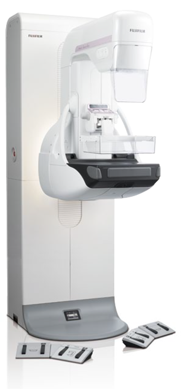
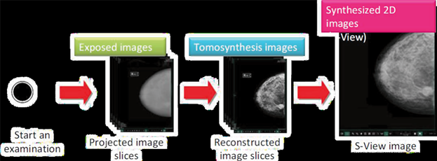
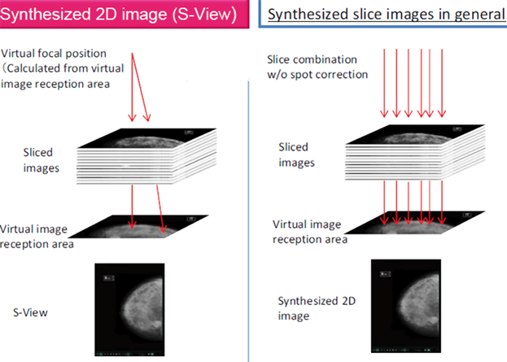
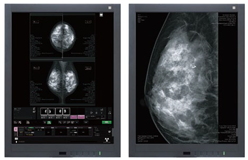
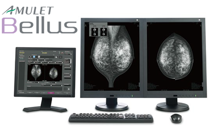
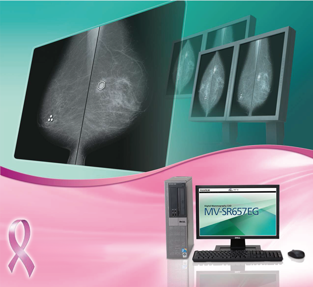

amulet innovality

Registro Sanitario: 2672E2013 SSA
CARACTERÍSTICAS:
- Detector de selenio amorfo (aSe) de conversión directa: Panel detector plano desarrollado por FUJIFILM con tecnología HCP (matriz de detección hexagonal) de alto rendimiento que permite lograr una alta calidad de imagen mamográfica, con pequeñas dosis de rayos X y bajo nivel de ruido.
- Resolución de pixel 50 um x 50 um.
- Tomosíntesis dual: ofreciendo dos modos (modo ST para mamografía de tamizaje y modo HR para mamografía diagnóstica).
- S-View (imagen de mamografía 2D sintetiza a partir de imágenes de tomosíntesis).
- Sistema de biopsia estereotáxica.
- Biopsia por tomosíntesis.
- Control de exposición inteligente con detección de implante: detecta el área más densa de la glándula mamaria con precisión. iAEC realiza un análisis de imágenes de pre-exposición y amplía el rango de análisis para mamas con implantes ajustando el kV y mAs de acuerdo con el tipo de mama.
Tomosíntesis dual:
Modos dedicados a la tomosíntesis:
a) Modo ST: prioriza la velocidad en la adquisición (± 7.5°).
b) Modo HR: incrementa el ángulo de deflexión mejorando la resolución en profundidad de la imagen (± 20°).
c) Modo combinado 2D+TOMO: realiza exposición 2D y tomosíntesis para incrementar la eficiencia del estudio.
S-VIEW
Imágenes de mamografías 2D sintetizadas a partir de imágenes de tomosíntesis.

La imagen sintetizada S-VIEW se posiciona para asistir a la interpretación mamográfica con imágenes de tomosíntesis.
La imagen sintetizada 2D es creada a partir de las intensidades máximas de los pixeles en las imágenes de tomosíntesis.
Las imágenes están dispuestas en una proyección acorde a la ubicación del punto focal virtual. Esto reduce los artefactos de reconstrucción y genera imágenes muy similares a las 2D real.

CARACTERÍSTICAS:
Imágenes de tomosíntesis exclusivas para reconstrucción 2D
Con el fin de crear imágenes sintetizadas aún más verosímiles a las imágenes 2D, ciertos cortes dedicados de tomosíntesis son creados en forma exclusiva para lograr reconstrucciones más exactas en lugar de utilizar sólo las imágenes de tomosíntesis.
Debido a que las imágenes exclusivas se utilizan para 2D sintetizado (S-View), ciertos artefactos son minimizados permitiendo la creación de imágenes similares a la mamografía en 2D.
Bajos artefactos
En general, cuanto mayor sea el ángulo de la adquisición de imágenes tomosíntesis, más artefactos son generados.
Optimización de imagen en 2D sintetizado de S-VIEW
Como las imágenes de cortes exclusivos se utilizan para S-View, siempre es posible optimizar las imágenes para regenerar las imágenes 2D en forma independientemente de los patrones de la tomosíntesis (1 o 2).
ESTACIONES DE TRABAJO
AWS: Es una consola de operación utilizada para:
• Introducir la información del paciente ID o tomar los datos del paciente desde una lista de trabajo.
• Programar las condiciones de exposición requerida (kV, mAs, AEC Mode, etc.).
• Adquirir y procesar los datos de imagen entregados por el detector.
• Generar imágenes de tomosíntesis.
• Realizar cálculos de posicionamiento en biopsia estereotáxica.
• Procesar y asegurar la calidad de la imagen antes del envío a PACS, impresión o estación de trabajo para el diagnóstico.
• La estación de trabajo puede grabar imágenes en DVD-ROM o CD-ROM según se requiera.

Estación BELLUS: Sistema de reporte y diagnóstico de mamografía con rápida visualización de imágenes y funciones inteligentes con tecnologías de reconocimiento de imágenes mamarias.
La estación BELLUS recibe las imágenes de mamografía directamente de los sistemas de adquisición de mamografía digital y/o desde el PACS a través de la red utilizando el protocolo DICOM. Las imágenes se visualizan en los monitores de grado médico para su diagnóstico mamográfico.

MASTOGRAFÍA DIGITAL CAD: Este sistema es una valiosa herramienta de apoyo en el sistema de detección. Utilizando algoritmos propietarios, este sistema CAD ayuda a detectar estructuras específicas en la imagen de mama.

DATOS COMPLEMENTARIOS: En FUJIFILM de México queremos convertirnos en su mejor aliado, es por eso que estamos comprometidos con nuestros clientes y ofrecemos el mejor servicio posventa.
FUJIFILM DE MÉXICO, S.A. de C.V.
Teléfono: (55) 5263-5500
e-mail: imagenologia@fujifilm.com.mx
www.fujifilm.com.mx